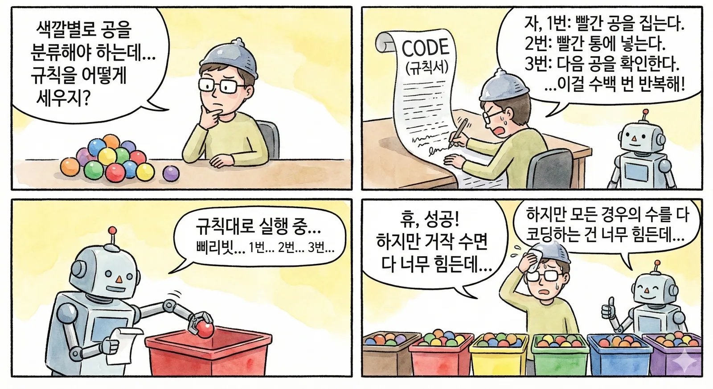
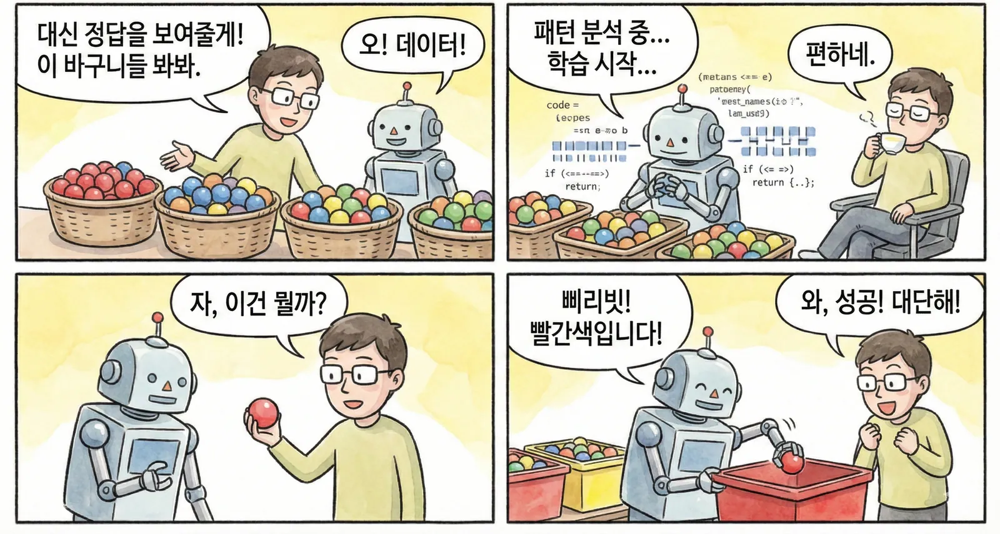
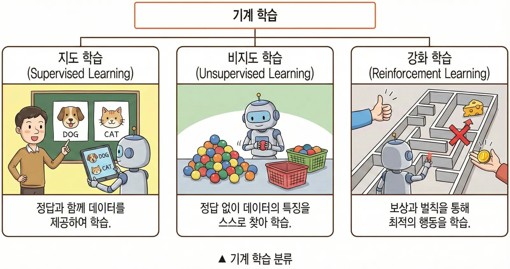
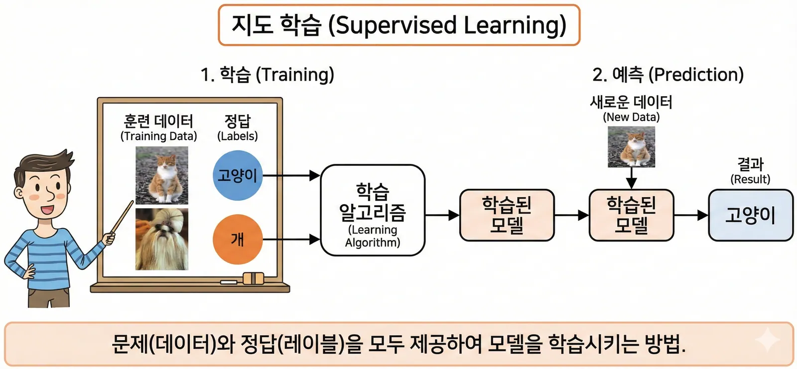
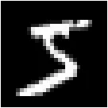
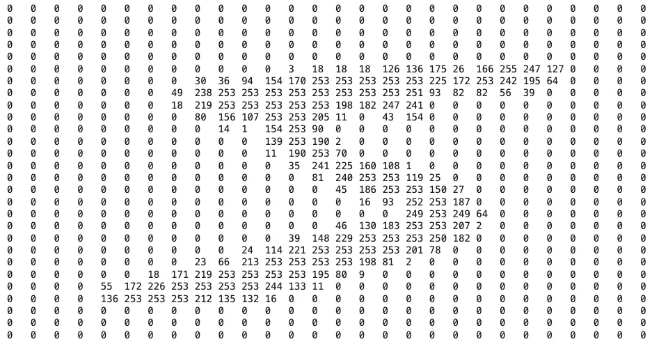
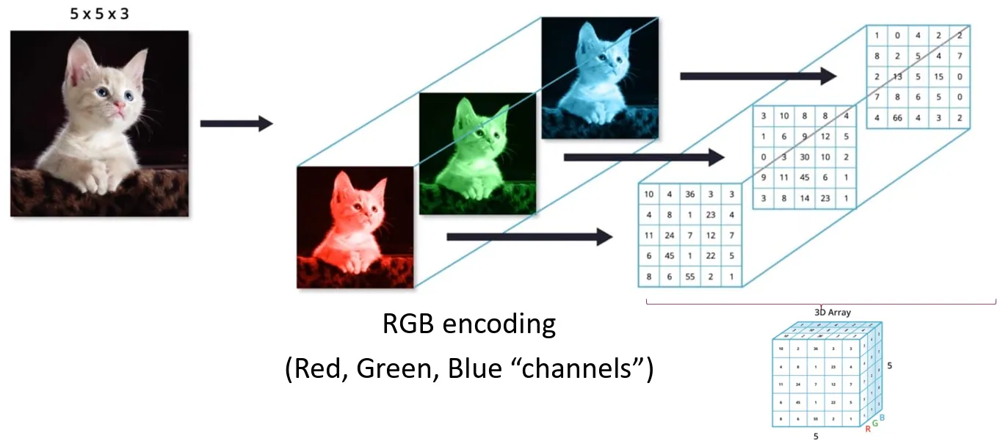
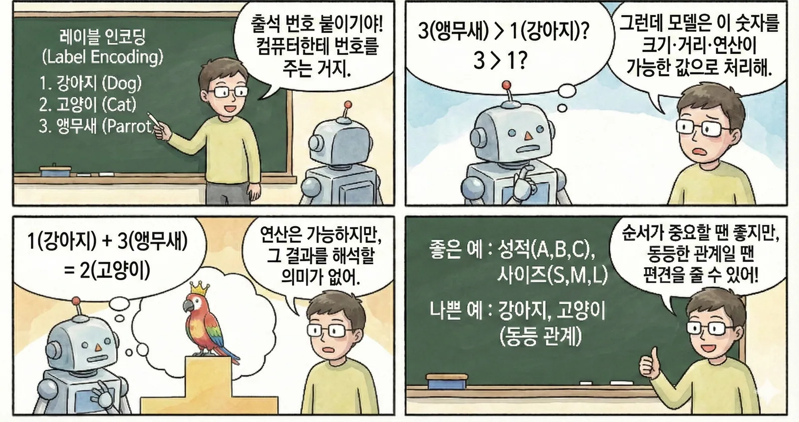
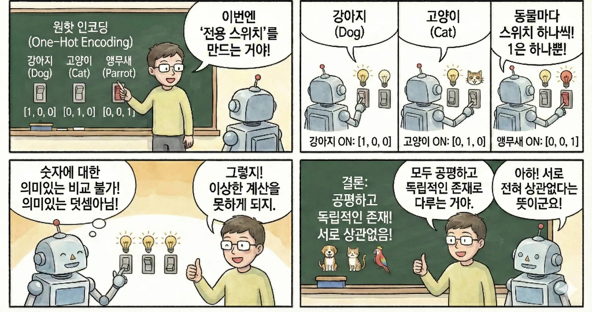

색깔 공 분류 규칙서
“빨간 공을 집는다 → 빨간 통에 넣는다 → 다음 공을 확인한다”처럼 가능한 경우의 수를 사람이 빠짐없이 적습니다. 예외가 많아질수록 규칙서도 길어집니다.
Part 1 · Machine Learning
사람이 규칙을 모두 적어 주는 대신, 문제와 정답을 보여 주면 컴퓨터는 데이터 속 패턴을 찾아 새로운 문제에 답합니다.
Rules First · S9
전통적인 프로그래밍은 사람이 모든 규칙을 직접 코딩해, 입력을 규칙에 넣어 결과를 만드는 방식입니다.
“빨간 공을 집는다 → 빨간 통에 넣는다 → 다음 공을 확인한다”처럼 가능한 경우의 수를 사람이 빠짐없이 적습니다. 예외가 많아질수록 규칙서도 길어집니다.

Learn from Data · S10
기계학습(Machine Learning)은 컴퓨터가 데이터를 바탕으로 패턴을 분석하여 스스로 학습하는 방법입니다.
사람은 공을 나누는 모든 규칙 대신 여러 예시와 정답을 제공합니다. 컴퓨터는 색과 모양의 패턴을 학습해 처음 보는 공도 분류합니다.

Three Ways · S11
정답을 주는지, 스스로 구조를 찾는지, 행동 결과에 보상을 주는지에 따라 학습 방식이 달라집니다.

문제와 정답을 함께 제공하여 학습합니다.
정답 없이 데이터의 특징이나 묶음을 스스로 찾습니다.
보상과 벌칙을 통해 더 좋은 행동을 학습합니다.
Supervised Learning · S12
지도학습은 훈련 데이터와 정답인 레이블을 모두 제공하여 모델을 학습시키는 방법입니다. 학습이 끝나면 새로운 데이터의 정답을 예측합니다.

Image as Numbers · S13–14
흑백 이미지의 각 픽셀은 0부터 255까지의 밝기 값 하나입니다. 컬러 이미지는 같은 위치에 Red·Green·Blue 세 값을 쌓아 표현합니다.



Interactive · Widget 01
픽셀을 가리키거나 탭해 0~255 값을 확인하고, 흑백 이미지를 RGB 세 채널로 분리해 보세요.
Encoding · S15–16
분류 정보를 숫자로 대응시키며, 이 숫자를 레이블(Label)이라고 합니다. 숫자를 붙이는 방식에 따라 모델이 받아들이는 관계도 달라집니다.


Original Comparison · S17
원본 비교표의 기준대로, 실제 순서가 있는 값과 서로 동등한 범주를 구분합니다.
| 구분 | Label Encoding | One-Hot Encoding |
|---|---|---|
| 방식 | 1, 2, 3 … 숫자 부여 | (1, 0, 0) 등의 벡터 부여 |
| 비유 | 반 번호, 등수 | 전구 스위치, 체크리스트 |
| 컴퓨터(모델)의 생각 | “3번이 1번보다 크네? 순서가 있나?” | “아~ 서로 완전히 다른 종류구나!” |
| 언제 쓸까? | 순서가 있을 때(성적, 사이즈 등) | 순서가 없을 때(동물, 색깔, 지역) |
Interactive · Widget 02
강아지·고양이·앵무새가 숫자 하나와 전용 스위치 벡터로 어떻게 달라지는지 비교하세요.
Quick Check
답을 고르면 바로 해설이 나타납니다.
답을 고르면 바로 해설이 나타납니다.